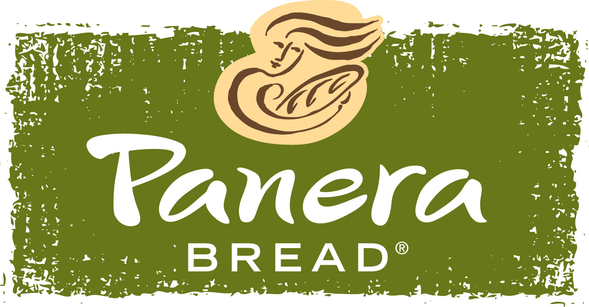

The food website
My favortie foods
Burgers,
Fries,
Chinese,
Salads,
Italian Sanwhichs,
strawberries,
Coffee cake,
Cookies
Apples,
Cupcakes
and Chicken.

My favorite resurants
Buger tap and shake,
chiplote,
panerna,
cheesecake factory,
PF changs,
Crave,
Kona Grill
and Five guys.

My least favorite resurants
Tdr's food
and subway

Panera has a website
Five Guys also has one.
Here is a text file i wrote on my favorite resurants.
| Best breakfast foods |
Best dinner foods |
| French toast |
A home cooked meal |
| Waffles |
Chicken and rice |
| pancakes |
Salads |